Configuration sur l'interface graphique
OPNsense propose différents services qui vont nous être utiles comme :
- DNS
- DHCP
- OpenVPN
Configuration des interfaces
Par défaut, OPNsense active certaines options qui risque de vous bloquez par la suite.
Tout d'abord allez sur votre navigateur et tapez ceci :
https://ip_interface_WAN:8443
Connectez vous en root et le mot de passe que vous avez défini.
Une fois connecté allez sur Interfaces>WAN
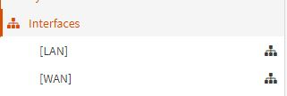
Une fois que vous êtes sur l'interface WAN il est important que ces deux options soit décoché
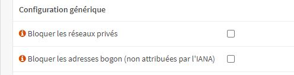
Faites la même manipulation pour l'interface LAN
Le DNS
Pour configurer le dns, il faudra vous rendre dans Systèmes>Paramètres>Général
Tout d'abord, renseignez votre nom de domaine ainsi que votre bonne Timezone :
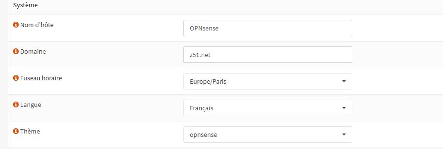
Ensuite, il faudra mettre votre serveur DNS
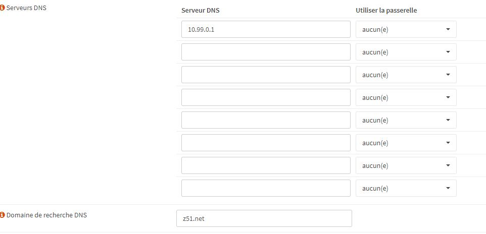
Une fois tout ceci effectué faite Sauvegarder tout en bas de la page
Ensuite, il faudra configurer votre serveur DNS pour cela, il faudra vous rendre dans Services>DNS Dnsmasq>Paramètres
Une fois sur la page renseignez ces informations :
{kind=link}
Enfin faites sauvegarder
Pour tester, il faudra vous rendre sur une machine cliente est faire un ping d'une vm dans le même réseaux de son nom plus .nom de domaine
DHCP
Pour configurer le DHCP, il faudra vous rendre dans Services>ISC DHCPv4>Dans l'interface que vous voulez activer le DHCP
Voici un exemple de configuration DHCP, il faudra l'adaptée à vos besoins :
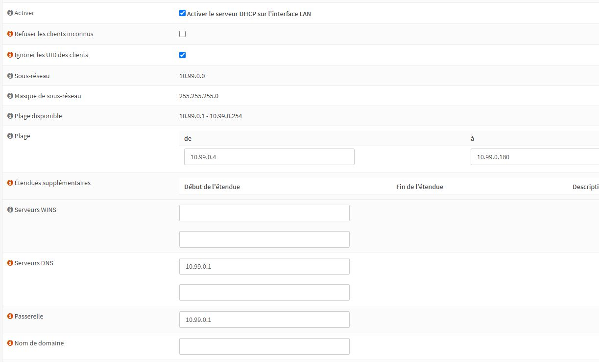
Une fois votre configuration fini, il faudra prendre le dépôt proxmox-vm-reseauxvirt dans Git-Lab crée votre vm et voir dans votre OPNsense dans le baux : Services>ISC DHCPv4>Baux si il y a bien votre vm
VPN
Certificat d'autorité
Tout d'abord, avant de configurer le vpn, il faut faire un certificat faisant Autorité
Pour ce faire, il faudra vous rendre dans Système>Gestion des certificats>Autorités
Ensuite, appuyer sur la petite croix en haut a droite
Ensuite, voici un exemple de configuration :
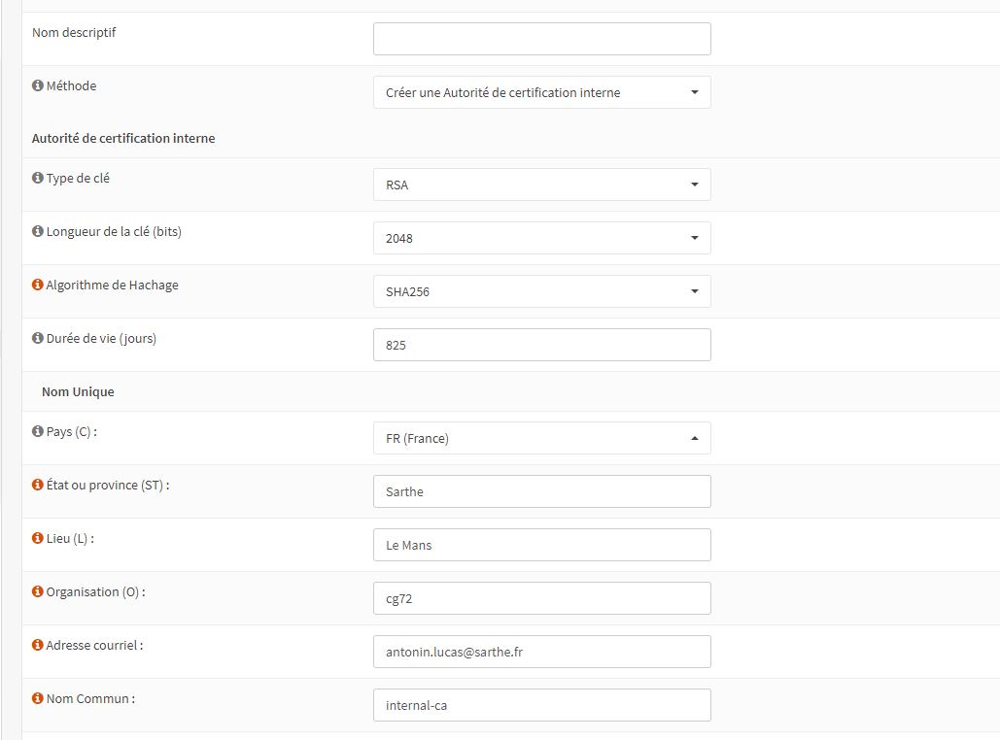
Adaptez selon vos besoins
Certificat serveur
Ensuite, il faudra créer un certificat pour le serveur. Pour cela il faudra vous rendre dans Système>Gestion des certificats>Certificats
Ensuite, appuyer sur la petite croix en haut a droite
Ensuite, voici un exemple de configuration :
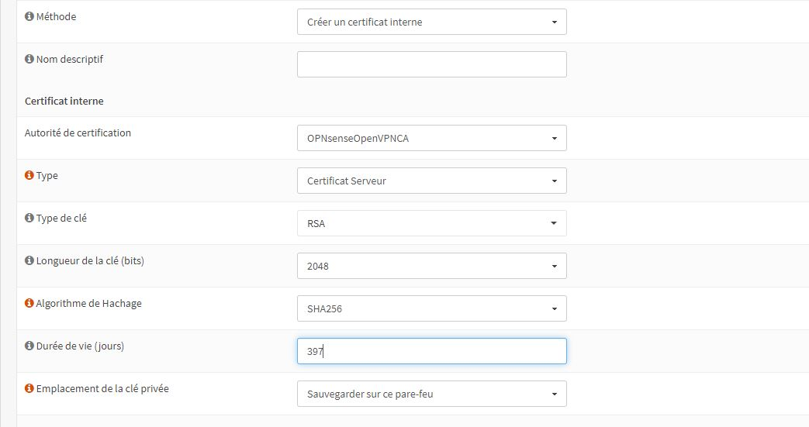
Création du User pour le VPN
Pour cela il faudra aller dans Système>Accès>Utilisateurs
Ensuite, cliquez sur la petite croix en haut à droite
Ensuite, il faudra remplir vos informations mais surtout il faudra cocher ceci :
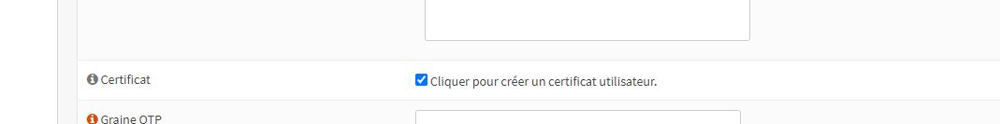
Ensuite, faites sauvegarder. Vous serez rédirigé vers la page des certificats pour pouvoir faire un certificat associé a l'utilisateur
Voici un exemple de configuration :
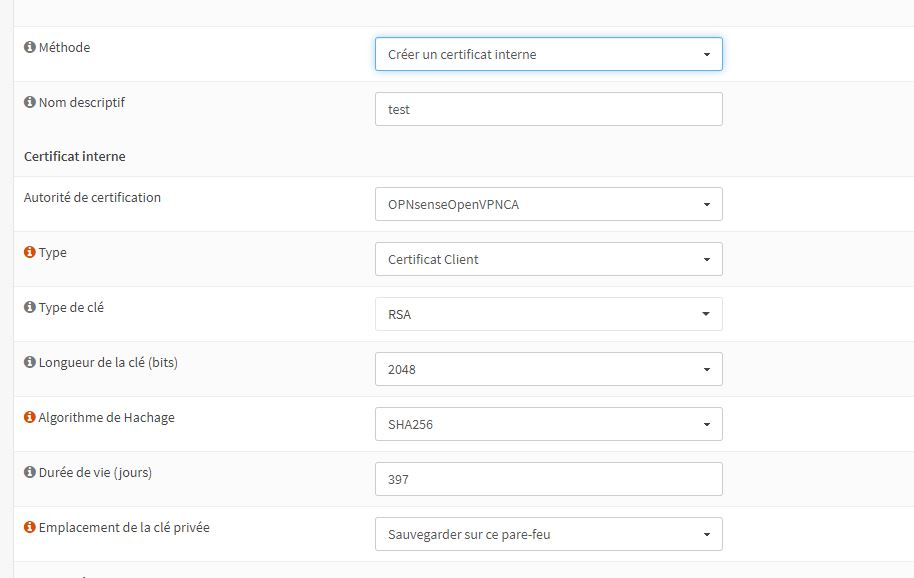
Quand ceci est fait, il faudra sauvegarder
Configuration Serveur VPN
Pour configurer votre serveur OpenVPN il faudra se rendre dans VPN>OpenVPN>Servers [legacy]
Ensuite, cliquez sur la petite croix en haut à droite
Ensuite, il faudra remplir vos informations :
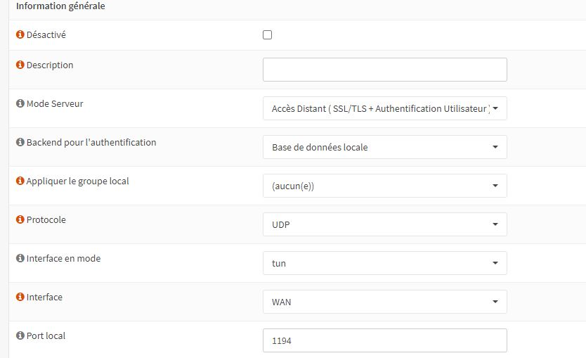
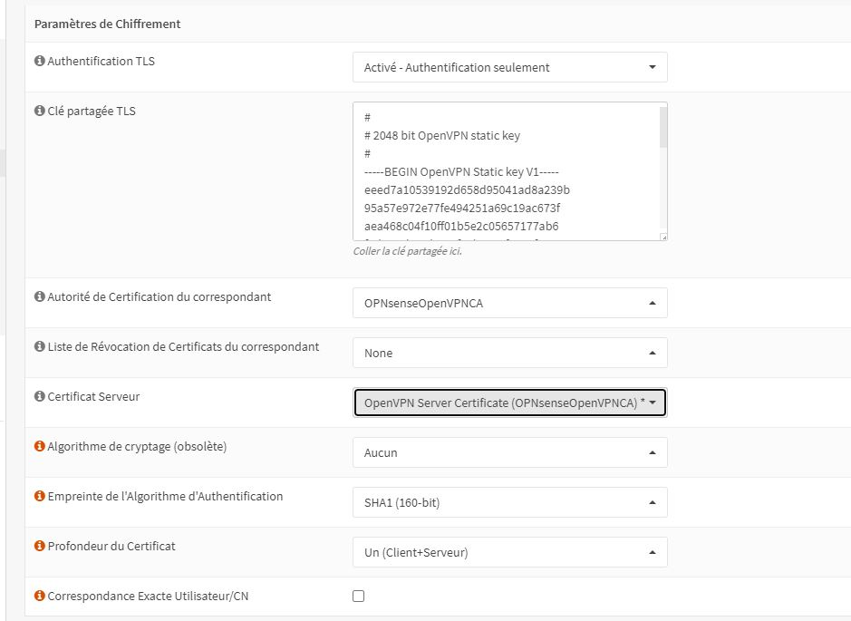
Ensuite, il y le paramètre réseaux du tunnel, adaptez ceci avec vos besoins
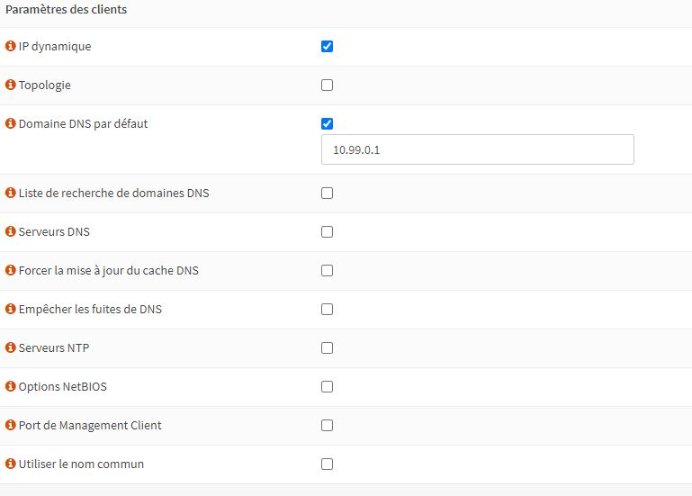
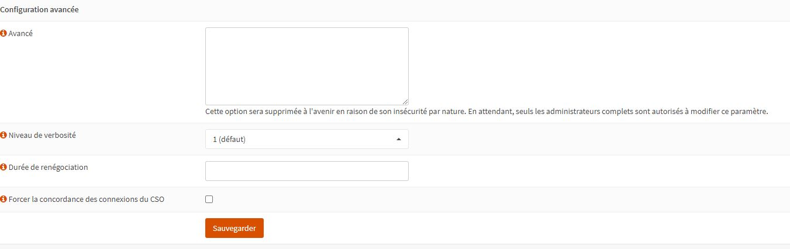
Quand vous aurez terminer la configuration du serveur faites sauvegarder
Configuration du client
Pour utiliser un vpn, il vous faut un client.
C'est pour cela qu'il faut installer la même version que celle sur l'OPNsense
Voici les commandes pour être sur d'avoir la bonne version :
sudo -s
Importez ensuite la clé GPG publique utilisée pour signer les packages :
mkdir -p /etc/apt/keyrings
curl -fsSL https://swupdate.openvpn.net/repos/repo-public.gpg | gpg --dearmor > /etc/apt/keyrings/openvpn-repo-public.gpg
Ensuite, vous devez créer un fragment sources.list (en tant que root) afin qu’apt puisse trouver les nouveaux paquets OpenVPN. Une façon de le faire est la suivante :
echo "deb [arch=<arch> signed-by=/etc/apt/keyrings/openvpn-repo-public.gpg] https://build.openvpn.net/debian/openvpn/<version> <osrelease> main" > /etc/apt/sources.list.d/openvpn-aptrepo.list
Où
Réf. AMD64
Par ARM64
i386
Où
stable : versions stables uniquement - pas d’alphas, de bêtas ou de RC testing : dernières versions, y compris les alphas/betas/RCs release/2.3 : Versions 2.3 d’OpenVPN release/2.4 : Versions 2.4 d’OpenVPN, y compris les versions alpha/bêta/RC release/2.5 : Versions 2.5 d’OpenVPN, y compris les versions alpha/bêta/RC release/2.6 : Versions 2.6 d’OpenVPN, y compris les versions alpha/bêta/RC
et
stretch (Debian 9.x) buster (Debian 10.x) Bullseye (Debian 11.x) rat de bibliothèque (Debian 12.x) bionique (Ubuntu 18.04 LTS) focal (Ubuntu 20.04 LTS) jammy (Ubuntu 22.04 LTS) cinétique (Ubuntu 22.10) lunaire (Ubuntu 23.04)
Ensuite, vous pourrez installer OpenVPN
apt-get update && apt-get install openvpn
Ensuite, il faut importer votre configuration VPN pour cela il faudra vous rendre dans VPN>OpenVPN>Exporter le client
Vous aller télécharger celle qui correspond a votre user VPN
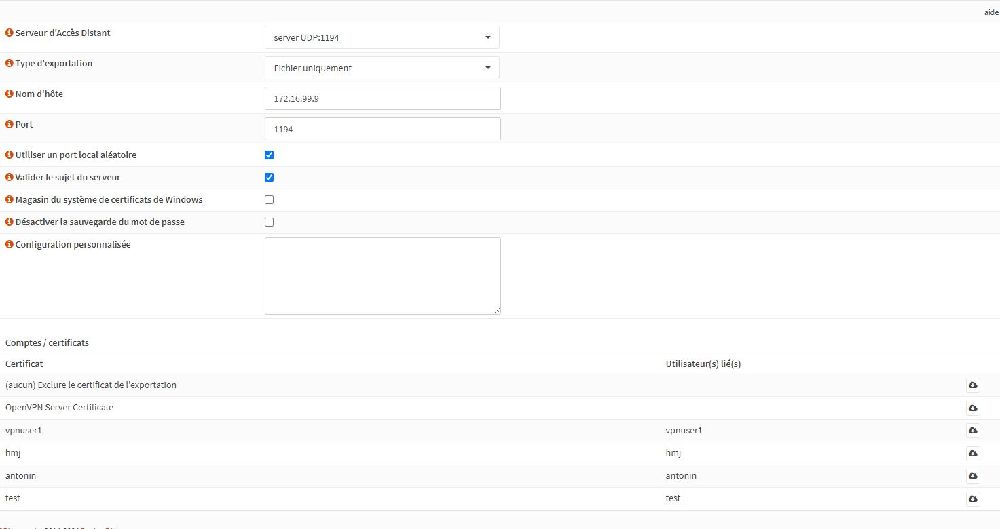
Ensuite, il vous suffira de retourner sur votre machine cliente et faire ceci
sudo openvpn "votre fichier importé"
Une fois votre commande effectué vous aurez a vous authentifié puis vous pourrez joindre votré réseaux privé et vous connecter en ssh sur vos machines présentes sur ce réseaux